2025 National 5 Biology marking instructions
Source: Scottish Qualifications Authority (SQA) / Qualifications Scotland. This is a StemInteract HTML companion, not an official HTML edition. Selectable text is supplied alongside original page images. Use the images or original PDF for equations, powers, fractions, vector notation, tables and diagrams; text extraction cannot fully preserve mathematical layout.
Jump to a question
PDF page 1
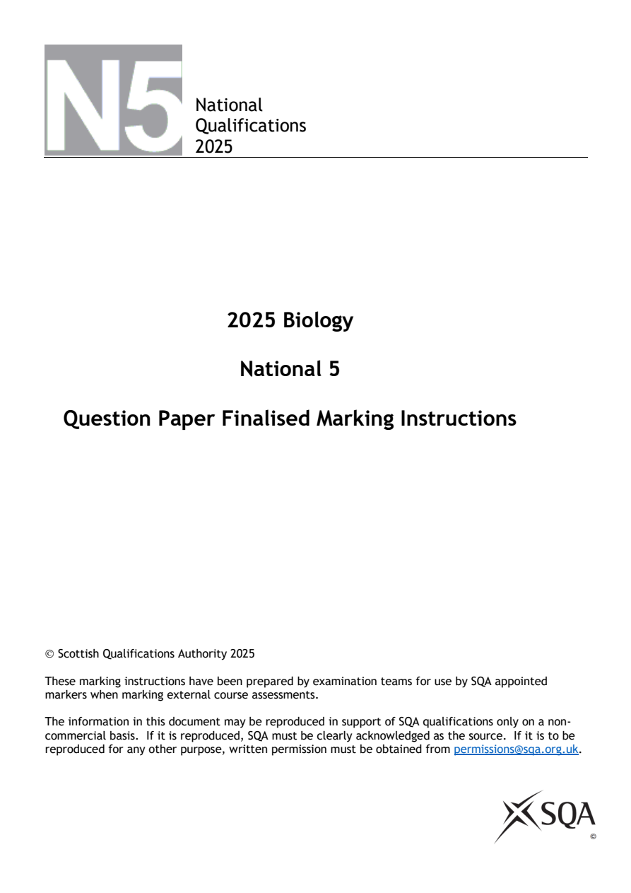
Selectable page text
National
Qualifications
2025
2025 Biology
National 5
Question Paper Finalised Marking Instructions
© Scottish Qualifications Authority 2025
These marking instructions have been prepared by examination teams for use by SQA appointed
markers when marking external course assessments.
The information in this document may be reproduced in support of SQA qualifications only on a non-
commercial basis. If it is reproduced, SQA must be clearly acknowledged as the source. If it is to be
reproduced for any other purpose, written permission must be obtained from permissions@sqa.org.uk.PDF page 2
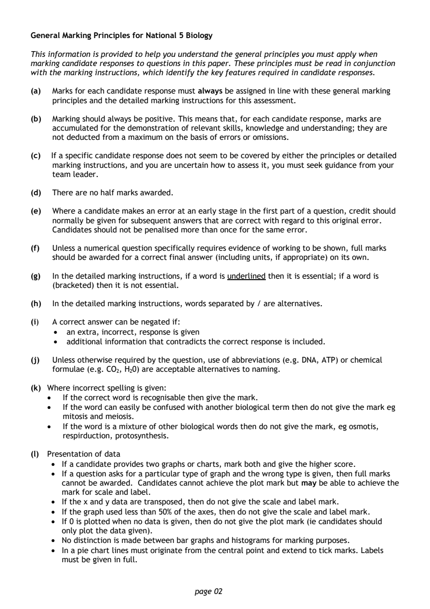
Selectable page text
General Marking Principles for National 5 Biology
This information is provided to help you understand the general principles you must apply when
marking candidate responses to questions in this paper. These principles must be read in conjunction
with the marking instructions, which identify the key features required in candidate responses.
(a) Marks for each candidate response must always be assigned in line with these general marking
principles and the detailed marking instructions for this assessment.
(b) Marking should always be positive. This means that, for each candidate response, marks are
accumulated for the demonstration of relevant skills, knowledge and understanding; they are
not deducted from a maximum on the basis of errors or omissions.
(c) If a specific candidate response does not seem to be covered by either the principles or detailed
marking instructions, and you are uncertain how to assess it, you must seek guidance from your
team leader.
(d) There are no half marks awarded.
(e) Where a candidate makes an error at an early stage in the first part of a question, credit should
normally be given for subsequent answers that are correct with regard to this original error.
Candidates should not be penalised more than once for the same error.
(f) Unless a numerical question specifically requires evidence of working to be shown, full marks
should be awarded for a correct final answer (including units, if appropriate) on its own.
(g) In the detailed marking instructions, if a word is underlined then it is essential; if a word is
(bracketed) then it is not essential.
(h) In the detailed marking instructions, words separated by / are alternatives.
(i) A correct answer can be negated if:
• an extra, incorrect, response is given
• additional information that contradicts the correct response is included.
(j) Unless otherwise required by the question, use of abbreviations (e.g. DNA, ATP) or chemical
formulae (e.g. CO , H 0) are acceptable alternatives to naming.
2 2
(k) Where incorrect spelling is given:
• If the correct word is recognisable then give the mark.
• If the word can easily be confused with another biological term then do not give the mark eg
mitosis and meiosis.
• If the word is a mixture of other biological words then do not give the mark, eg osmotis,
respirduction, protosynthesis.
(l) Presentation of data
• If a candidate provides two graphs or charts, mark both and give the higher score.
• If a question asks for a particular type of graph and the wrong type is given, then full marks
cannot be awarded. Candidates cannot achieve the plot mark but may be able to achieve the
mark for scale and label.
• If the x and y data are transposed, then do not give the scale and label mark.
• If the graph used less than 50% of the axes, then do not give the scale and label mark.
• If 0 is plotted when no data is given, then do not give the plot mark (ie candidates should
only plot the data given).
• No distinction is made between bar graphs and histograms for marking purposes.
• In a pie chart lines must originate from the central point and extend to tick marks. Labels
must be given in full.
page 02PDF page 3
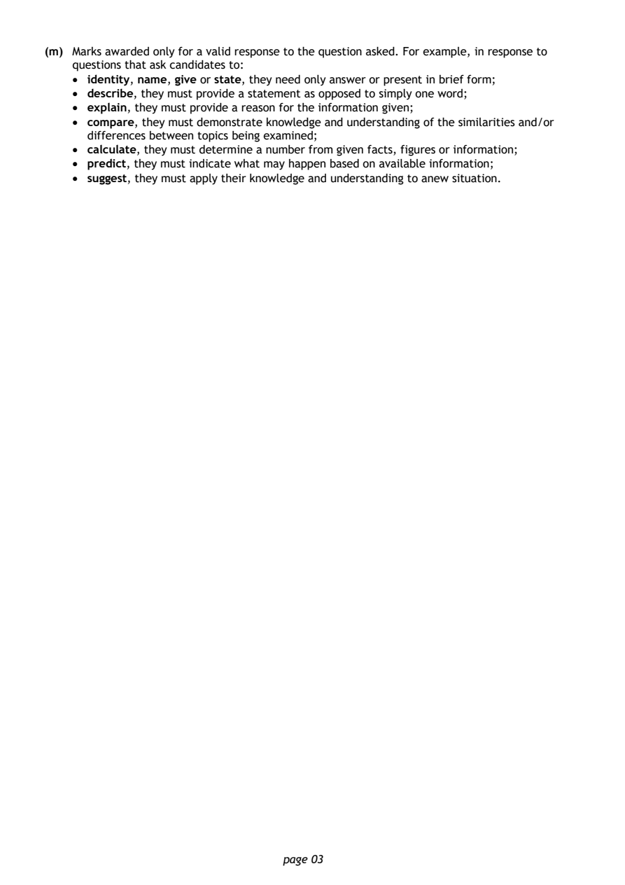
Selectable page text
(m) Marks awarded only for a valid response to the question asked. For example, in response to
questions that ask candidates to:
• identity, name, give or state, they need only answer or present in brief form;
• describe, they must provide a statement as opposed to simply one word;
• explain, they must provide a reason for the information given;
• compare, they must demonstrate knowledge and understanding of the similarities and/or
differences between topics being examined;
• calculate, they must determine a number from given facts, figures or information;
• predict, they must indicate what may happen based on available information;
• suggest, they must apply their knowledge and understanding to anew situation.
page 03PDF page 4
Paper 1, Question 1Paper 1, Question 2Paper 1, Question 3Paper 1, Question 4Paper 1, Question 5Paper 1, Question 6Paper 1, Question 7Paper 1, Question 8Paper 1, Question 9Paper 1, Question 10Paper 1, Question 11Paper 1, Question 12Paper 1, Question 13Paper 1, Question 14Paper 1, Question 15Paper 1, Question 16Paper 1, Question 17Paper 1, Question 18Paper 1, Question 19Paper 1, Question 20Paper 1, Question 21Paper 1, Question 22Paper 1, Question 23Paper 1, Question 24Paper 1, Question 25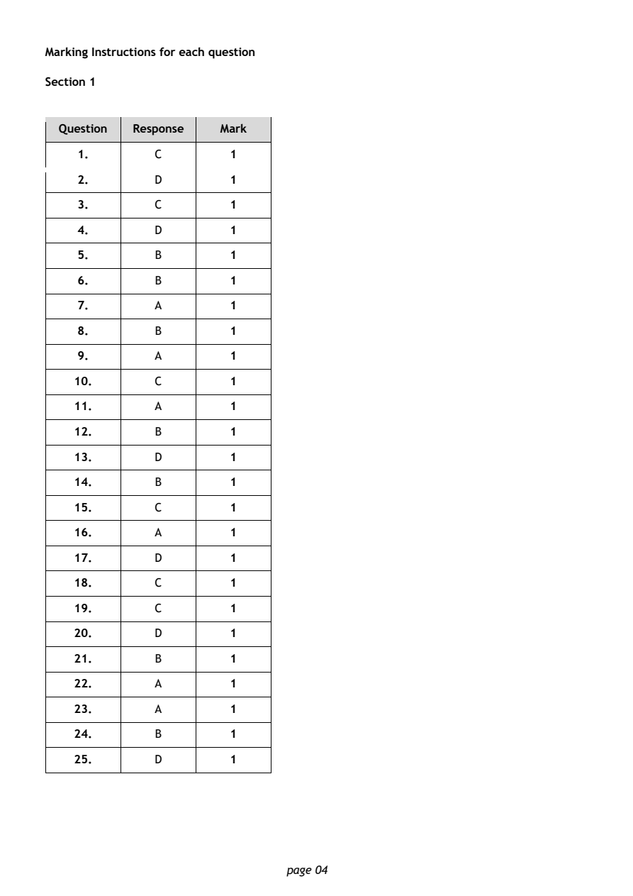
Selectable page text
Marking Instructions for each question
Section 1
Question Response Mark
1. C 1
2. D 1
3. C 1
4. D 1
5. B 1
6. B 1
7. A 1
8. B 1
9. A 1
10. C 1
11. A 1
12. B 1
13. D 1
14. B 1
15. C 1
16. A 1
17. D 1
18. C 1
19. C 1
20. D 1
21. B 1
22. A 1
23. A 1
24. B 1
25. D 1
page 04PDF page 5
Paper 2, Question 1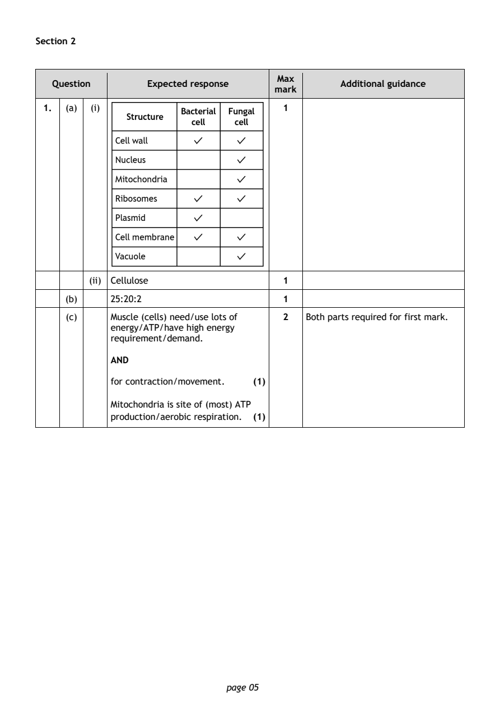
Selectable page text
Section 2
Max
Question Expected response Additional guidance
mark
1. (a) (i) 1
(ii) Cellulose 1
(b) 25:20:2 1
(c) Muscle (cells) need/use lots of 2 Both parts required for first mark.
energy/ATP/have high energy
requirement/demand.
AND
for contraction/movement. (1)
Mitochondria is site of (most) ATP
production/aerobic respiration. (1)
page 05PDF page 6
Paper 2, Question 2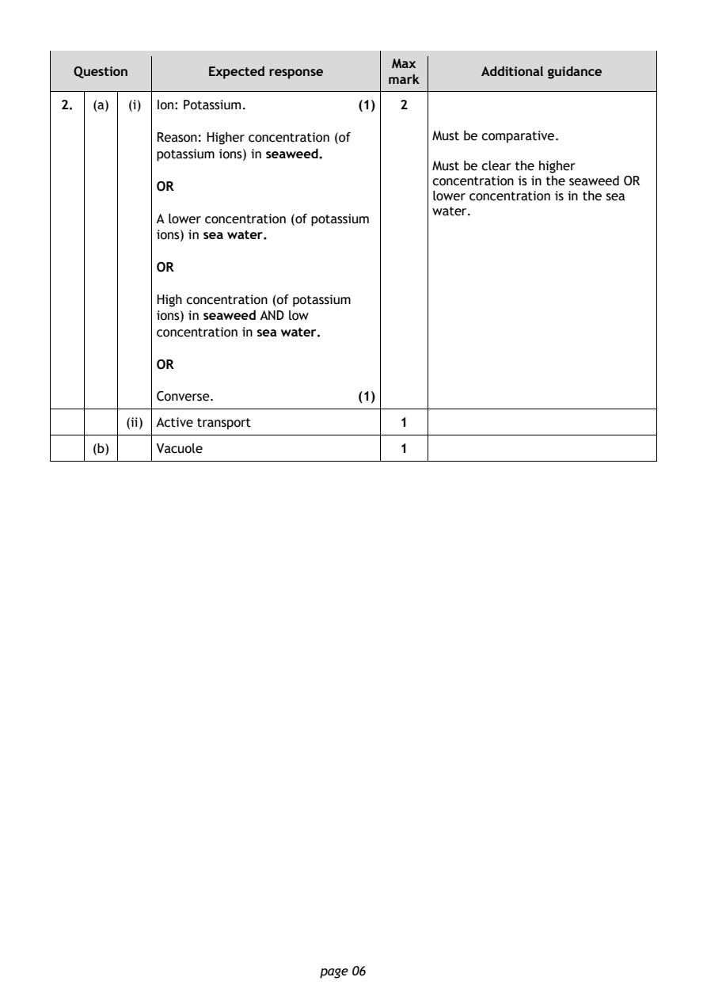
Selectable page text
Max
Question Expected response Additional guidance
mark
2. (a) (i) Ion: Potassium. (1) 2
Reason: Higher concentration (of Must be comparative.
potassium ions) in seaweed.
Must be clear the higher
concentration is in the seaweed OR
OR
lower concentration is in the sea
water.
A lower concentration (of potassium
ions) in sea water.
OR
High concentration (of potassium
ions) in seaweed AND low
concentration in sea water.
OR
Converse. (1)
(ii) Active transport 1
(b) Vacuole 1
page 06PDF page 7
Paper 2, Question 3Paper 2, Question 4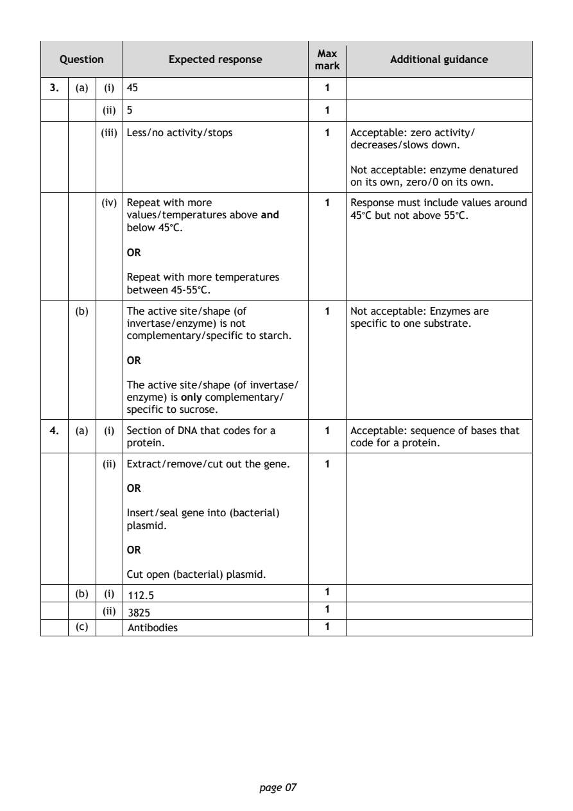
Selectable page text
Max
Question Expected response Additional guidance
mark
3. (a) (i) 45 1
(ii) 5 1
(iii) Less/no activity/stops 1 Acceptable: zero activity/
decreases/slows down.
Not acceptable: enzyme denatured
on its own, zero/0 on its own.
(iv) Repeat with more 1 Response must include values around
values/temperatures above and 45°C but not above 55°C.
below 45°C.
OR
Repeat with more temperatures
between 45-55°C.
(b) The active site/shape (of 1 Not acceptable: Enzymes are
invertase/enzyme) is not specific to one substrate.
complementary/specific to starch.
OR
The active site/shape (of invertase/
enzyme) is only complementary/
specific to sucrose.
4. (a) (i) Section of DNA that codes for a 1 Acceptable: sequence of bases that
protein. code for a protein.
(ii) Extract/remove/cut out the gene. 1
OR
Insert/seal gene into (bacterial)
plasmid.
OR
Cut open (bacterial) plasmid.
(b) (i) 112.5 1
(ii) 3825 1
(c) Antibodies 1
page 07PDF page 8
Paper 2, Question 5Paper 2, Question 6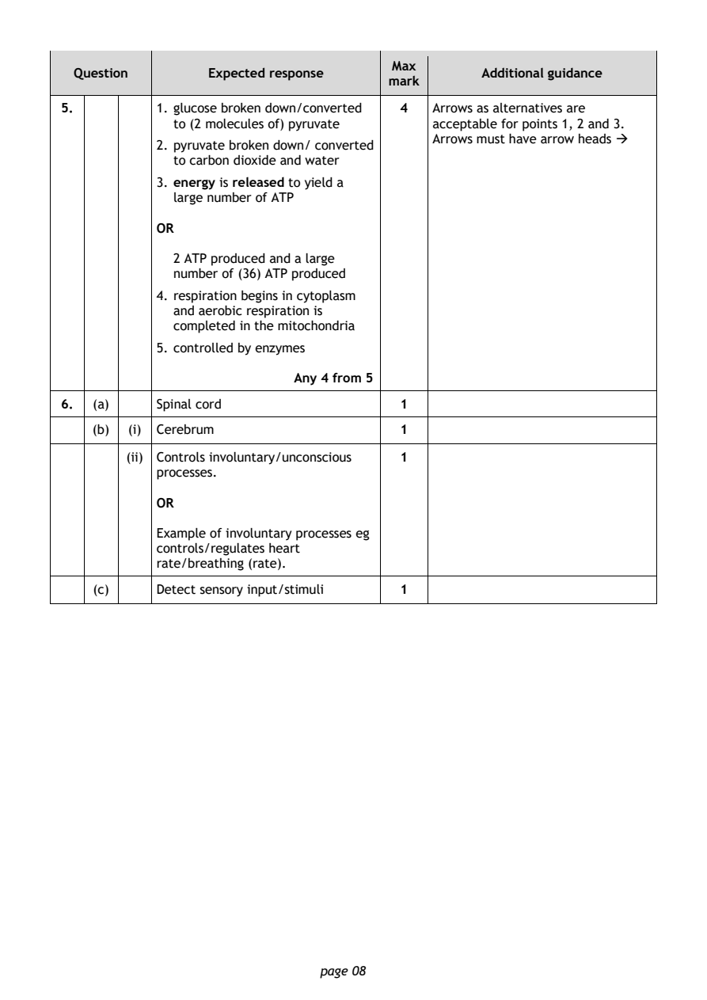
Selectable page text
Max
Question Expected response Additional guidance
mark
5. 1. glucose broken down/converted 4 Arrows as alternatives are
to (2 molecules of) pyruvate acceptable for points 1, 2 and 3.
Arrows must have arrow heads →
2. pyruvate broken down/ converted
to carbon dioxide and water
3. energy is released to yield a
large number of ATP
OR
2 ATP produced and a large
number of (36) ATP produced
4. respiration begins in cytoplasm
and aerobic respiration is
completed in the mitochondria
5. controlled by enzymes
Any 4 from 5
6. (a) Spinal cord 1
(b) (i) Cerebrum 1
(ii) Controls involuntary/unconscious 1
processes.
OR
Example of involuntary processes eg
controls/regulates heart
rate/breathing (rate).
(c) Detect sensory input/stimuli 1
page 08PDF page 9
Paper 2, Question 7Paper 2, Question 8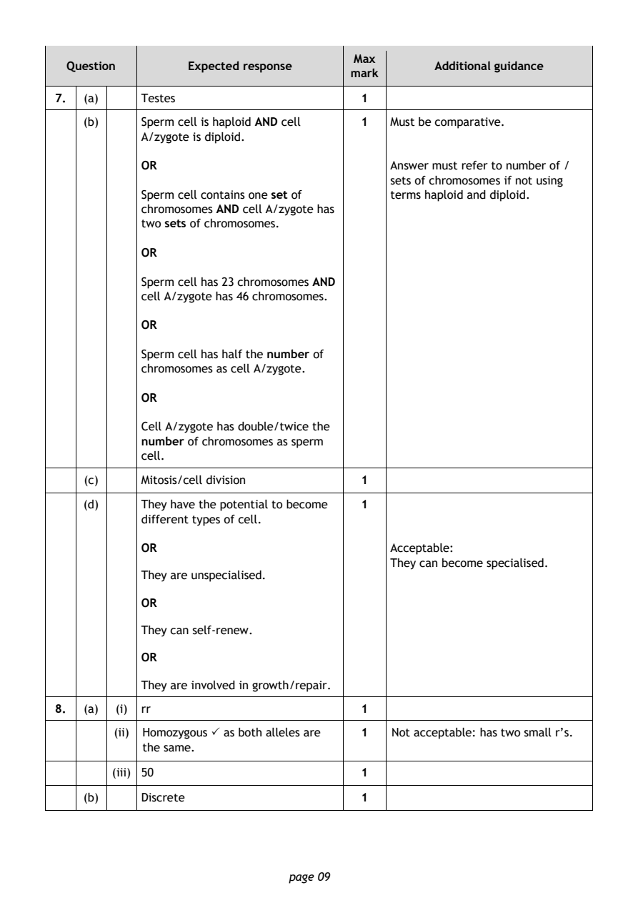
Selectable page text
Max
Question Expected response Additional guidance
mark
7. (a) Testes 1
(b) Sperm cell is haploid AND cell 1 Must be comparative.
A/zygote is diploid.
OR Answer must refer to number of /
sets of chromosomes if not using
Sperm cell contains one set of terms haploid and diploid.
chromosomes AND cell A/zygote has
two sets of chromosomes.
OR
Sperm cell has 23 chromosomes AND
cell A/zygote has 46 chromosomes.
OR
Sperm cell has half the number of
chromosomes as cell A/zygote.
OR
Cell A/zygote has double/twice the
number of chromosomes as sperm
cell.
(c) Mitosis/cell division 1
(d) They have the potential to become 1
different types of cell.
OR Acceptable:
They can become specialised.
They are unspecialised.
OR
They can self-renew.
OR
They are involved in growth/repair.
8. (a) (i) rr 1
(ii) Homozygous as both alleles are 1 Not acceptable: has two small r’s.
the same.
(iii) 50 1
(b) Discrete 1
page 09PDF page 10
Paper 2, Question 9Paper 2, Question 10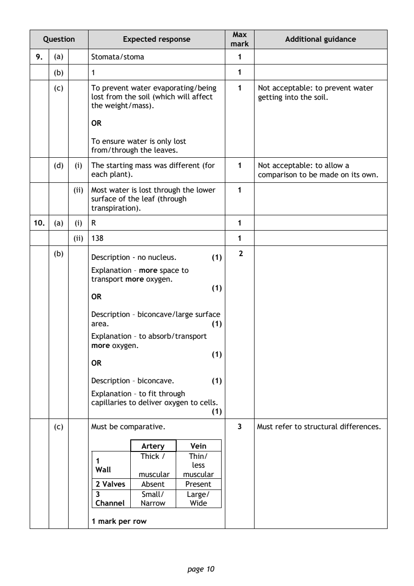
Selectable page text
Max
Question Expected response Additional guidance
mark
9. (a) Stomata/stoma 1
(b) 1 1
(c) To prevent water evaporating/being 1 Not acceptable: to prevent water
lost from the soil (which will affect getting into the soil.
the weight/mass).
OR
To ensure water is only lost
from/through the leaves.
(d) (i) The starting mass was different (for 1 Not acceptable: to allow a
each plant). comparison to be made on its own.
(ii) Most water is lost through the lower 1
surface of the leaf (through
transpiration).
10. (a) (i) R 1
(ii) 138 1
(b) 2
Description - no nucleus. (1)
Explanation – more space to
transport more oxygen.
(1)
OR
Description – biconcave/large surface
area. (1)
Explanation – to absorb/transport
more oxygen.
(1)
OR
Description – biconcave. (1)
Explanation – to fit through
capillaries to deliver oxygen to cells.
(1)
(c) Must be comparative. 3 Must refer to structural differences.
Artery Vein
Thick / Thin/
1
less
Wall
muscular muscular
2 Valves Absent Present
3 Small/ Large/
Channel Narrow Wide
1 mark per row
page 10PDF page 11
Paper 2, Question 11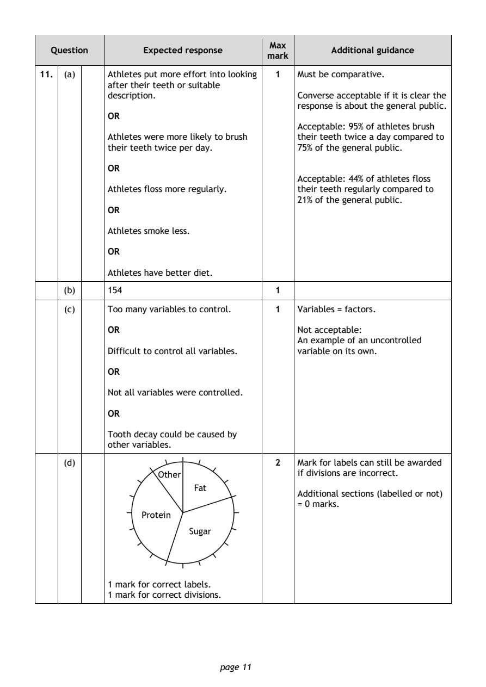
Selectable page text
Max
Question Expected response Additional guidance
mark
11. (a) Athletes put more effort into looking 1 Must be comparative.
after their teeth or suitable
description. Converse acceptable if it is clear the
response is about the general public.
OR
Acceptable: 95% of athletes brush
Athletes were more likely to brush their teeth twice a day compared to
their teeth twice per day. 75% of the general public.
OR
Acceptable: 44% of athletes floss
Athletes floss more regularly. their teeth regularly compared to
21% of the general public.
OR
Athletes smoke less.
OR
Athletes have better diet.
(b) 154 1
(c) Too many variables to control. 1 Variables = factors.
OR Not acceptable:
An example of an uncontrolled
Difficult to control all variables. variable on its own.
OR
Not all variables were controlled.
OR
Tooth decay could be caused by
other variables.
(d) 2 Mark for labels can still be awarded
if divisions are incorrect.
Additional sections (labelled or not)
= 0 marks.
1 mark for correct labels.
1 mark for correct divisions.
page 11PDF page 12
Paper 2, Question 12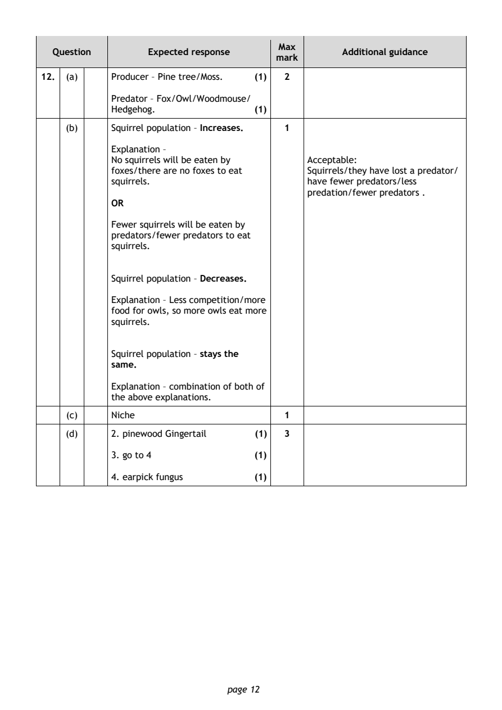
Selectable page text
Max
Question Expected response Additional guidance
mark
12. (a) Producer – Pine tree/Moss. (1) 2
Predator – Fox/Owl/Woodmouse/
Hedgehog. (1)
(b) Squirrel population – Increases. 1
Explanation –
No squirrels will be eaten by Acceptable:
foxes/there are no foxes to eat Squirrels/they have lost a predator/
squirrels. have fewer predators/less
predation/fewer predators .
OR
Fewer squirrels will be eaten by
predators/fewer predators to eat
squirrels.
Squirrel population – Decreases.
Explanation – Less competition/more
food for owls, so more owls eat more
squirrels.
Squirrel population – stays the
same.
Explanation – combination of both of
the above explanations.
(c) Niche 1
(d) 2. pinewood Gingertail (1) 3
3. go to 4 (1)
4. earpick fungus (1)
page 12PDF page 13
Paper 2, Question 13Paper 2, Question 14Paper 2, Question 15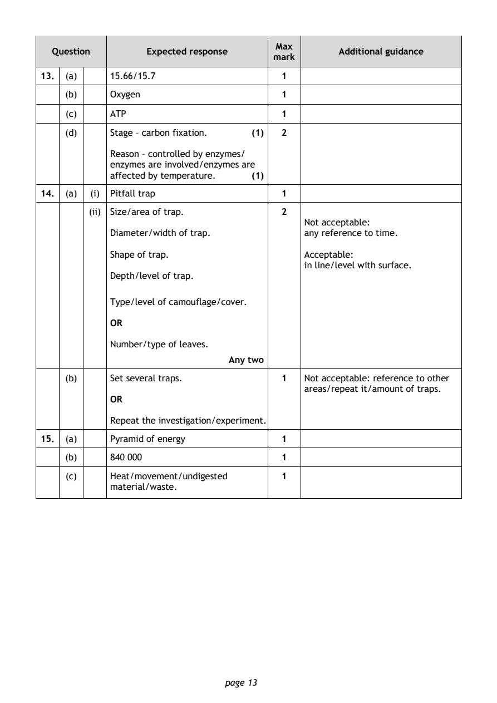
Selectable page text
Max
Question Expected response Additional guidance
mark
13. (a) 15.66/15.7 1
(b) Oxygen 1
(c) ATP 1
(d) Stage – carbon fixation. (1) 2
Reason – controlled by enzymes/
enzymes are involved/enzymes are
affected by temperature. (1)
14. (a) (i) Pitfall trap 1
(ii) Size/area of trap. 2
Not acceptable:
Diameter/width of trap. any reference to time.
Shape of trap. Acceptable:
in line/level with surface.
Depth/level of trap.
Type/level of camouflage/cover.
OR
Number/type of leaves.
Any two
(b) Set several traps. 1 Not acceptable: reference to other
areas/repeat it/amount of traps.
OR
Repeat the investigation/experiment.
15. (a) Pyramid of energy 1
(b) 840 000 1
(c) Heat/movement/undigested 1
material/waste.
page 13PDF page 14
Paper 2, Question 16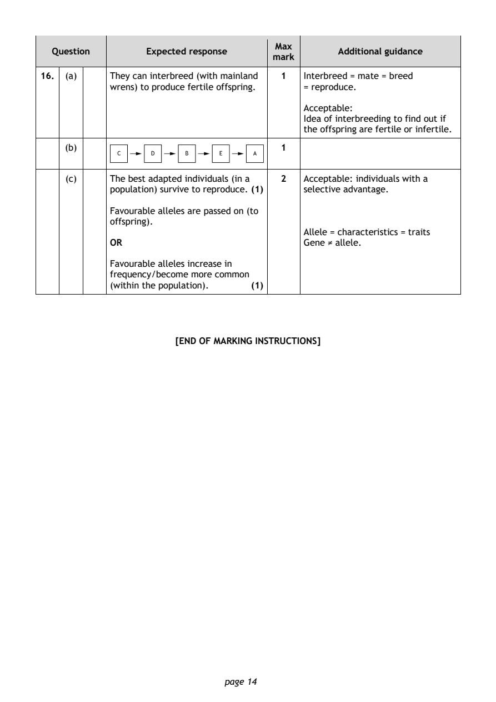
Selectable page text
Max
Question Expected response Additional guidance
mark
16. (a) They can interbreed (with mainland 1 Interbreed = mate = breed
wrens) to produce fertile offspring. = reproduce.
Acceptable:
Idea of interbreeding to find out if
the offspring are fertile or infertile.
(b) 1
(c) The best adapted individuals (in a 2 Acceptable: individuals with a
population) survive to reproduce. (1) selective advantage.
Favourable alleles are passed on (to
offspring).
Allele = characteristics = traits
OR Gene ≠ allele.
Favourable alleles increase in
frequency/become more common
(within the population). (1)
[END OF MARKING INSTRUCTIONS]
page 14